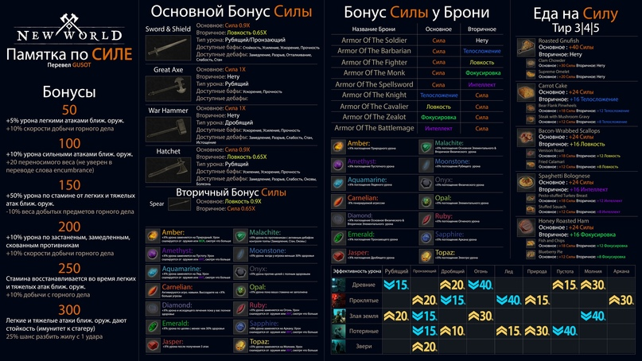
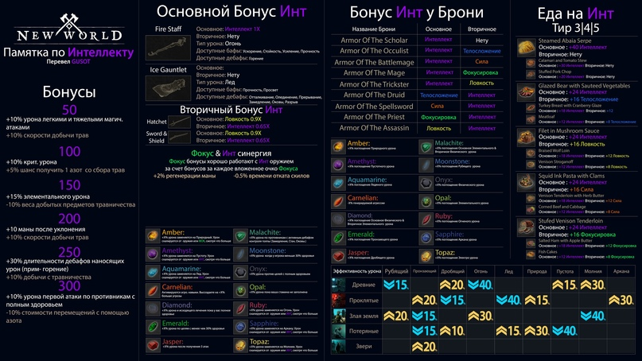
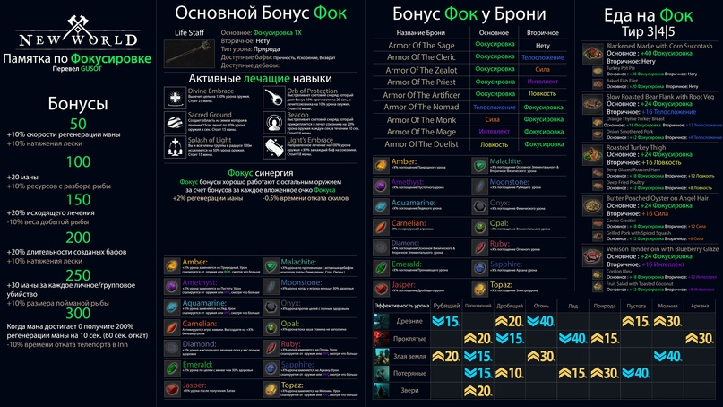
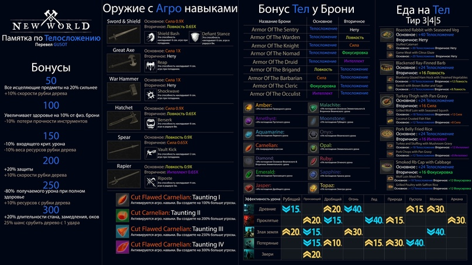

Даю этой странице 6 шакалов из 10





Однажды один старый шаман собрал свое племя у костра и сказал: "Послушайте старинную сказку, которая показывает, на что-то из того, про что нельзя рассказать,
и рассказывает про то, на что нельзя указать". Пока все пытались понять смысл того, что они услышали, шаман раскурил трубку и начал свой рассказ:
Поехала одна мама со своим сыном на юг отдыхать. Долго ли, коротко ли, добрались до щели в горах, расставили палатку, живут.
Пошел однажды мальчик погулять по лесу и встретился ему енот. Мальчик кричит еноту: "Уходи прочь с дороги!". Енот и не подумал уходить, встал на задние лапы и страшно завращал своими глазищами.
Мальчик испугался и убежал.
Прибежал мальчик к своей маме, рассказал ей про свою встречу с Енотом и заплакал.
- Почему ты плачешь? - спросила мама.
- Мама, кто трусливее, я или енот?
- Конечно, ты, Енот тебя не испугался, а ты его испугался.
Мальчик заплакал еще сильнее.
- Тебе осталось только одно: найти енота, убить, и съесть его сердце, - странным голосом сказала мама.
Мальчик взял свой складной ножик, бутылочку с кока-колой и пирожок, положил их в свой рюкзачок и пошел в лес. Бродил мальчик по горам, бродил, и нашел берлогу енотов. Посветив фонариком, он увидел,
что в берлоге сидит Енот со своей енотихой и маленьким енотиком.
 - Ты меня напугал, теперь я стал трусливее Енота, поэтому я должен тебя убить и съесть твое сердце, - крикнул мальчик.
- Ты меня напугал, теперь я стал трусливее Енота, поэтому я должен тебя убить и съесть твое сердце, - крикнул мальчик.
- Да, я поступил неправильно, зря я вращал глазами. Что же, убивай меня, я не буду сопротивляться, - сказал енот, откинувшись на спину.
Мальчик достал ножик, убил Енота, вырезал у него сердце и съел. После этого он радостно пошел домой, весь перепачканный в крови енота. Но радость его быстро сменилась на зависть. "Какой добрый Енот:
дал себя убить, чтобы исправить свою вину. Какой злой я: убил Енота только для того, чтобы стать чуть-чуть храбрее", - подумал он с горечью.
Прибежал мальчик к своей маме, рассказал ей про свою встречу с Енотом и заплакал.
- Почему ты плачешь? - спросила мама.
- Мама, кто добрее, я или Енот?
- Конечно, Енот, он дал себя убить, а ты этим воспользовался.
- Мальчик заплакал еще сильнее.
- Тебе осталось только одно: найти семью Енота и помогать воспитывать его ребенка, - странным голосом сказала мама.
Мальчик пошел в лес и стал жить вместе с Енотихой, добывать еду, убирать берлогу. Через месяц он сам превратился в Енота, а его мама уехала домой, потому что ее отпуск закончился.
Однажды пошел Мальчик-Енот за едой для енотика и повстречал другого мальчика.
Мальчик кричит Мальчику-Еноту: "Уходи прочь с дороги!". Мальчик-Енот и не подумал уходить, ведь он стал храбрый, как Енот. Мальчик-Енот встал на задние лапы и страшно завращал своими глазищами.
Мальчик испугался и убежал.
Прибежал мальчик к своей маме, рассказал ей про свою встречу с Енотом и заплакал.
- Почему ты плачешь? - спросила мама.
- Мама, кто трусливее, я или енот?
- Конечно, ты, Енот тебя не испугался, а ты его испугался.
Мальчик заплакал еще сильнее.
- Тебе осталось только одно, найти Енота, убить, и съесть его сердце, - странным голосом сказала мама.
Мальчик взял свой складной ножик, бутылочку с пепси-колой и ватрушку, положил их в свой рюкзачок и пошел в лес. Бродил мальчик по горам, бродил и нашел берлогу енотов. Посветив фонариком, он увидел,
что в берлоге сидит Мальчик-Енот.
- Ты меня напугал, теперь я стал трусливее Енота, поэтому я должен тебя убить и съесть твое сердце, - крикнул мальчик.
- Ух-ты, какой хитрый. Я сам тебя убью.
Убил Мальчик-Енот мальчика и сам съел его сердце. Как только он это сделал, так сразу и превратился в мальчика.
Пошел бывший Мальчик-Енот, теперь просто мальчик, к маме того мальчика, которого он убил, и, притворившись ее сыном, сказал:
- Мама, я убил Енота, и теперь я такой же храбрый, как Енот.
- Ты врешь, ты не мой сын, а я не женщина, я жена Енота, которого ты убил, чтобы стать храбрым как Енот. И не мальчика ты убил, а моего старшего сына Енота! - воскликнула женщина, превратилась в Енотиху,
убила мальчика и съела его сердце.
Как только она это сделала, так сразу же превратилась в мальчика.
На следующий год поехала одна мама без сына на юг отдыхать. Долго ли, коротко ли, добралась до щели в горах, расставила палатку, живет.
Вдруг, ни с того ни с сего, приходит к ней мальчик и говорит:
- Здравствуй мама, я воспитал маленького енотика, теперь я такой же добрый, как Енот.
- Врешь ты все, никакой ты не мальчик, а Енотиха которая убила моего сына, за то что он убил твоего мужа и старшего сына. И никакая я не женщина, я жена Зайца, которого убил Енот,
чтобы стать таким же быстрым как Заяц. И никакого моего сына ты не убивала, ты убила своего младшего сына, которого я превратила в мальчика, чтобы он убил своего отца и
старшего сына, - женщина рассмеялась, превратилась в зайчиху и убила енотиху.
Шаман закончил свой рассказ, огляделся по сторонам и сказал: "Так добро снова победило зло".
Потом убрал свою трубку в расшитый бисером чехол и ушел к себе в вигвам, буркнув: "Карма отличается от кармана турбулентностью".
Вождь растолковал: "Он хотел сказать, что Енотов есть нельзя – нечистые звери", и ушел спать.
Главный повар сказал: "Вы слышали? На этой неделе нельзя есть".
Все люди подумали: "Ничего себе их вставило!, но вслух ничего не сказали, а похлопали в ладоши, и пошли спать.
Ну, там как было. Сначала люди бегали повсюду вообще дикие, и жрали друг друга без остановки, потому что зверя хуй поймаешь, и вообще у него зубы там, клыки —
может ведь и наоборот получиться.
Потом одни чуваки допетрили, что хавчик можно выращивать и его точить. И зверей тоже выращивать можно. Но только слабых, чтобы их потом можно замочить было без проблем и тоже схавать.
Медведей, тигров — их особо не повыращиваешь. А в те времена в лесах ещё и не такое водилось.
Для всей этой байды с безопасной едой нужна инфраструктура: фермы там, поля, загоны для скота, колодец и прочая хуйня. То есть особо не побегаешь уже.
А те чуваки, которые всё ещё бегали и жрали — периодически набегали на тех, у которых инфраструктура, и нещадно их пиздили. И всё у них забирали, а что не могли забрать — сжигали,
и дальше бежали.
Потом самые вообще хитрые среди тех, что бегали, вдруг поняли, что можно захватить тех, кто не бегает — самому ни хера не делать, а хавать и забирать то, что нравится у захваченных.
Но не всё — чтобы они с голоду не передохли. А убежать — они всё равно не убегут, у них вон, коровы. Куда они с коровами денутся.
Только надо от других таких же желающих обезопаситься. Так что они заставили своих новоиспеченных рабов выстроить защитный забор, а сами вооружились получше, и начали колбаситься.
Но вскоре их победили более злобные сильные говнюки. Тех, в свою очередь, ещё более крутые, и в результате нехитрого естественного отбора — в конце концов у власти оказались настоящие боевые
пидорасы. Прямо загляденье. А чтобы народ не пездел, они придумали, что их бог назначил всеми командовать. Да так качественно придумали, что и сами в это поверили.
И что приятно, захотелось чего-нибудь эдакого: хуяк — написал указ и готово. Надо тебе вдруг денег — так и пишешь: "Всем, блядь, немедленно отдать мне половину всех своих доходов,
а то пиздец вам!" или там приказываешь всем побриться на лысо, и ходишь потом, щелбаны раздаешь. А тех, кто не слушается, пиздит омон или какая-нибудь похожая организация.
У каждого правителя такая есть.
И тут такая штука, что люди вообще через жопу устроены. То есть, ежели кто главнее другого, то этого другого он уже за человека не считает. И чем больше разрыв, тем сильнее это сказывается.
И в какой-то момент любой правитель вдруг понимает, что он сам бог, потому что по сравнению с ним все остальные — ну просто говно, не достойное упоминания. При чём говно тупое, опасное,
и без него никак не обойтись, потому что именно в нём корни силы. Настоящим-то богам попроще будет — их хуй достанешь с неба. А тут, чуть что не так, так сразу хуяк, и закипело.
А кипящее говно и воняет, и ошпарить может сильно. Поэтому, во-первых, была создана специальная служба, охраняющая тушку правителя буквально ото всех, а во-вторых, департамент пиздежа,
который только тем и занимается, что отвлекает людей от косяков власти и перенаправляет энергию в полезное для неё русло. И сработало, блять!
А немногих недовольных пиздит омон или какая-нибудь другая похожа организация.
И казалось бы, можно расслабиться и получать от жизни удовольствие, но нет, сука, вдруг оказывается, что в других странах эволюция пошла по тому же пути, и там есть свои боги.
И все они поголовно мудаки, и норовят друг другу подгадить постоянно. Ну, и начинаются тут сразу интриги, заговоры, подковерная игра, а иногда и до драк доходит.
И вот они там, в другой реальности сражаются друг с другом, и даже не догадываются, что сами они такие же рабы мирового закулисья.